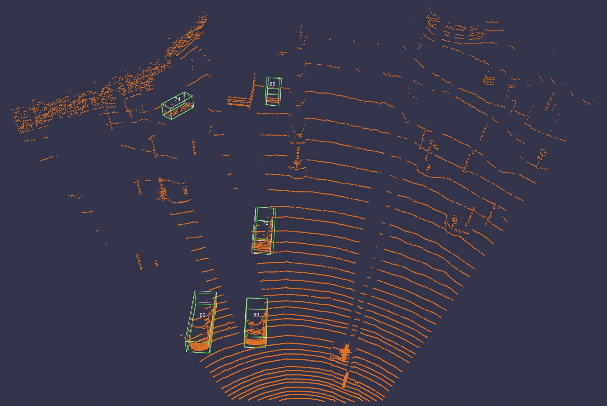

Enhanced Box Refinement for 3D Object Detection

Prediction from the baseline model

Prediction of the same scene from the improved model, confidence scores improve significantly
Abstract / Description
In this project, we construct a 2-stage 3D object detector to detect vehicles in autonomous driving scenes from irregular 3D point clouds. The first stage, a Region Proposal Network (RPN), generates coarse detection results from the point cloud inputs. The second stage, a Box Refinement Network (BRN), further refines these initial detections to improve the detection saccuracy. We employ a pre-trained RPN and mainly concentrate on the implementation and improvement of the BRN.
Project Details
We first pool the extracted features according to the initial predictions obtained from the first stage RPN to generate regions-of-interests (ROIs), i.e. smaller pools of information at and around likely objects.
After that, we assign each ROI a ground truth bounding box, and classify each of them as foreground sample, easy background sample or hard background sample. During training, we feed different classes of samples into the network as evenly as possible. This is to make the BRN to predict an accurate confidence score for each of the ROI. The training of BRN is supervised via smoothL1 loss over the box parameters and BCE loss over the foreground/background categories.
For each ROI, the network will output a bounding box and a confident score indicating its confidence that this box contains a vehicle. Since there are multiple ROIs sent into the model for each scene, we perform Non-Maximum Suppression to reduce the number of predictions during evaluation. The resulting predictions from our network are evaluated on three ground truth bounding box difficulty levels: easy, moderate, hard (determined based on distance, truncation and occlusion).
With the above BRN as the baseline model, we presented two methods for addressing the shortcomings and improving the performance of the baseline network, namely, canonical transformation for the model to predict distant objects more accurately, and data augmentation for it to not overfit the training data. We also studied their respective effects on the baseline network and the effect when they are combined.
Results / Conclusion
-
We present in the following table that, by applying the above-mentioned modules, compared to the baseline model, the mAP metrics improve remarkably by 17.24%, 18.08% and 23.91% on the validation sets of three different difficulty levels, respectively.
-
From the same table we also show that the separate application of both modules can achieve significant improvements over the baseline model, while the data augmentation module becomes redundant when canonical transformation is performed in the network.
-
We find that by utilizing canonical transformation in the model, the increased performance can be achieved with a considerably reduced training time, meaning that it leads to much faster convergence, as seen from the training curves in the figure below.
-
On the other hand, the canonical transformation can cause the model to produce false predictions near the boundary of the point cloud (see in the results figure), but adjusting parameters and hyperparameters related to the depth feature of the points may alleviate this adverse effect.